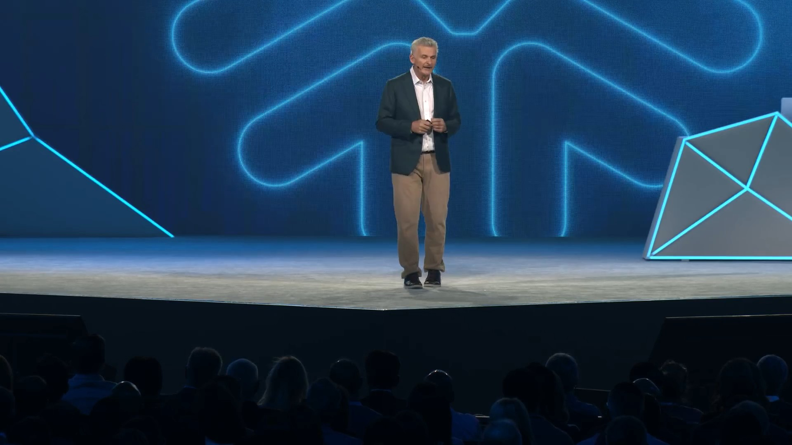
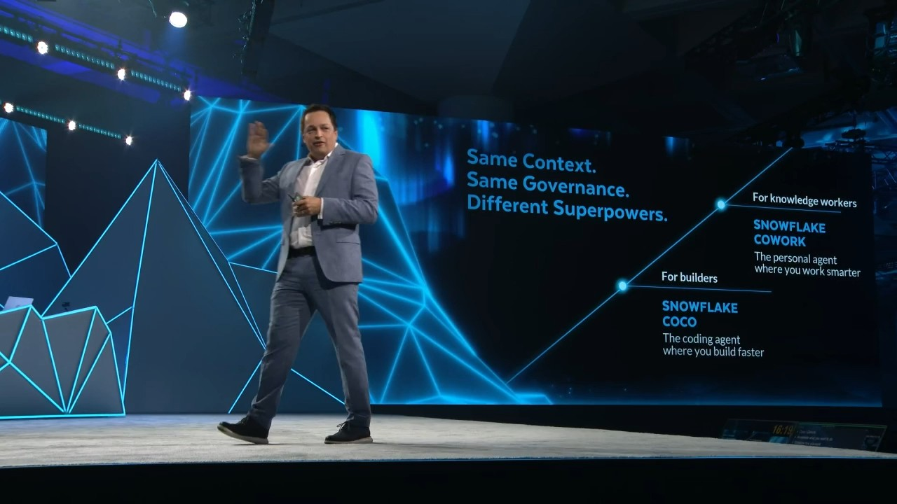
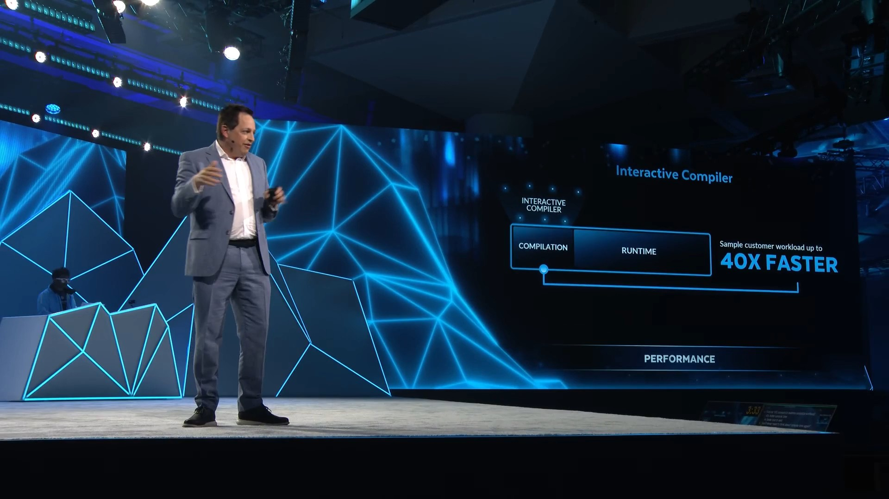
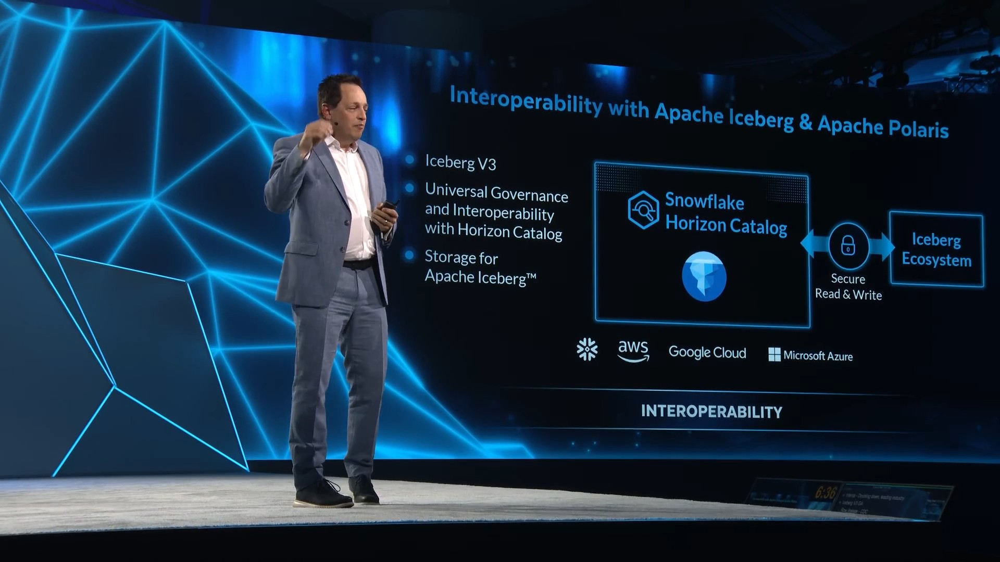
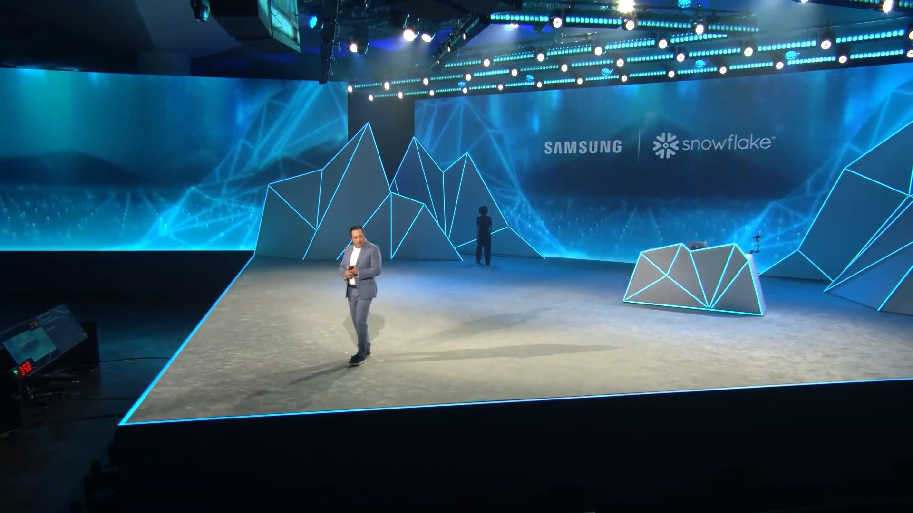
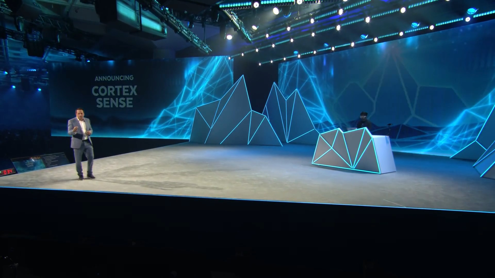

Created: June 2, 2026 | Based on English transcript
Speakers: Benoit Dageville (Co-founder & Chief Architect) · Christian Kleinerman (EVP, Product) · Dash Desai (Live Demos) / Guests: Thomson Reuters · Under Armour · Samsung
Catch up on the Platform Keynote in 5 minutes
The Day 2 Platform Keynote opened with Snowflake Co-founder Benoit Dageville reflecting on 10 years since founding, followed by EVP of Product Christian Kleinerman delivering 30+ product announcements over 90 minutes. The session kicked off with the official renames: Cortex Code → Snowflake CoCo and Snowflake Intelligence → Snowflake CoWork — which drew a strong reaction from the crowd.
The keynote followed a 4-act structure: Ease of Use / Trust / Open & Interoperable / CoWork for Everyone. Key announcements included CoCo Desktop GA, Kafka-compatible streaming with Snowflake Data Stream, Cortex Sense for dramatically improved agent accuracy, expanded zero-copy integrations with SAP, Workday and others, and Adaptive Compute GA (~2x faster).
Thomson Reuters (governance), Under Armour (interoperability), and Samsung (CoWork) each took the stage to share how they're running AI in production. The closing message was "Snowflake takes you from the era of 'can we' to 'shall we?'"
4 business takeaways from the Platform Keynote
Officially renamed at Summit 2026
"From here on, no more Cortex Code. It is officially Snowflake CoCo." — Christian Kleinerman
"The scope of Snowflake Intelligence is so much broader than when we started. It's changing how we work."
The four themes running through today's announcements
CoCo and CoWork — the control plane for every organization
AI Coding Agent (formerly Cortex Code)
Also available in Excel, VS Code, and GitHub Marketplace. Snowsight & CLI sandbox support. Scheduled execution and Async API compatible.
Personal AI Work Engine (formerly Snowflake Intelligence)
For everyone from CEO to frontline staff. User Memory learns your patterns over time. Artifact creation, sharing, and MCP integration all in one.
Announcements organized in chronological order

Benoit Dageville (Co-founder & Chief Architect) — sharing the founding vision of "eliminating data silos"
After CoCo collaborated with live-coding DJ "R. Tyler" for an opening performance, Benoit Dageville reflected on Snowflake's founding origins and the journey to where it stands today.

Snowflake Data Stream announced — fully managed Kafka Wire-compatible streaming (~33:20)
"We are in the friction elimination business."
Recorded clip with audio — CoCo Desktop diagnosing and fixing a live streaming app pipeline failure using natural language

Interactive Compiler announced — "40X FASTER" compile times shown on stage (~1:05:27)
Caitlin Hugerty (Thomson Reuters) × Christian Kleinerman — fireside chat on stage (~56:54)
Recorded clip with audio — CoWork demonstrating governance through masking policies, data movement policies, and Trust Center

Open & Interoperable section — Iceberg V3, SAP GA, Open Sharing, and more (~1:15:30)
Patrick Deroso (Under Armour CDAO) — takes the stage in a UA jacket, sharing the 7-year Snowflake partnership and their AI Transformation journey (~1:27:00)
IT era (request a report → wait days) → BI era (data democratization) → Today: the "ubiquitous intelligence" era. Everyone has the power of a data scientist.
Jung Suh (Samsung Electronics, VP Digital Commerce) — SIA agent and AX model enabling 1,000 executives to use data daily (~1:32:20)

Christian Kleinerman (Snowflake EVP of Product) — announces new CoWork features following the Samsung case study (~1:37:50)

Cortex Sense announced — runtime auto-enhancement improving agent accuracy from 24% → 83% (~1:40:25)
Recorded clip with audio — Dash Desai demonstrating CoWork Personal Work Agent from "Start my day" through Deep Research, Cortex Sense, and Slack MCP
Concrete steps your organization can take